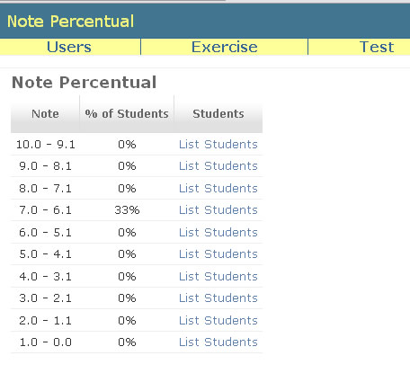

Percentage of notes
In addition to percentage of passed tests, there is the percentage of notes. This page is accessible from Exercise View page clicking at the link "See Note Percentual".
It is similar to percentage of right tests. To each line table there are tracks of notes and at the side the percentage os students that obtained that note. Too, is possible list the students.

Only the teacher and the assistants can see this page.